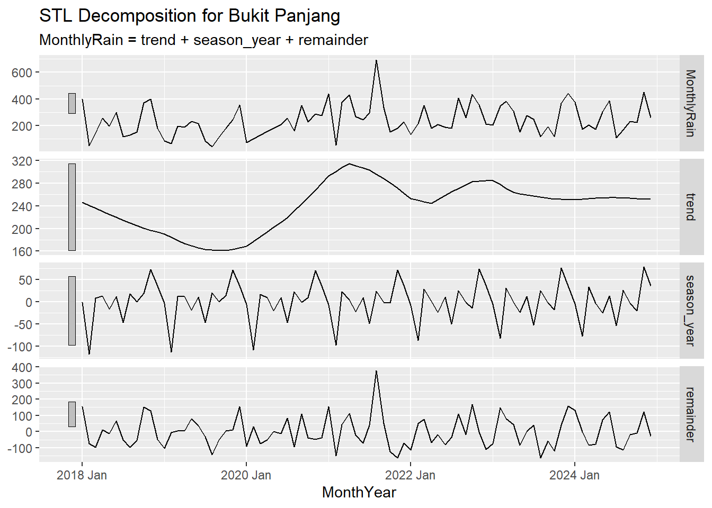
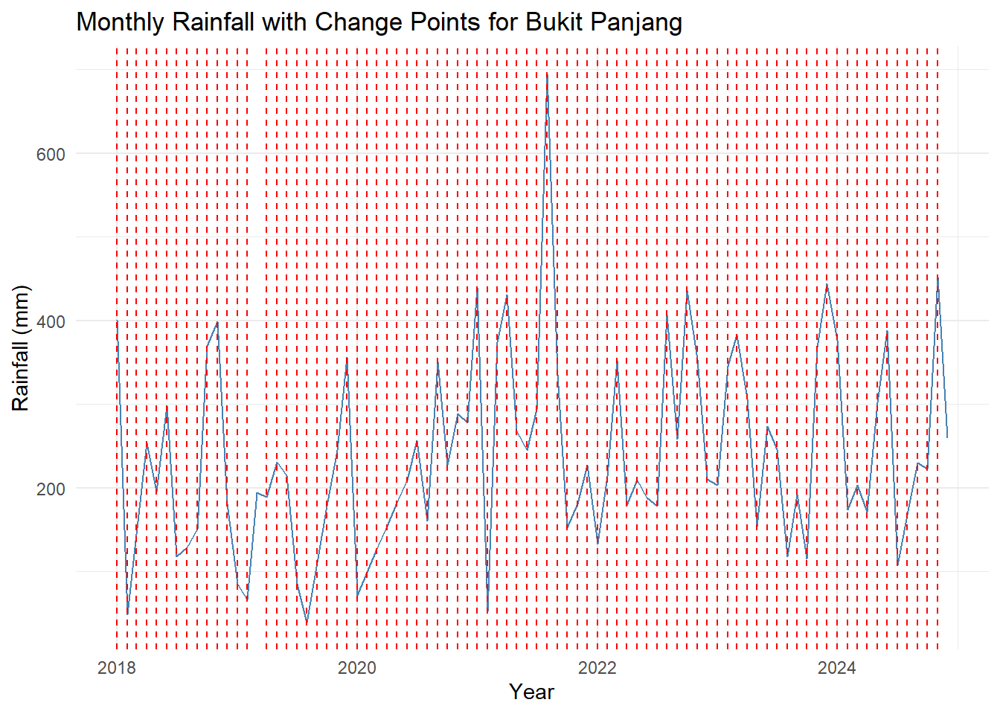
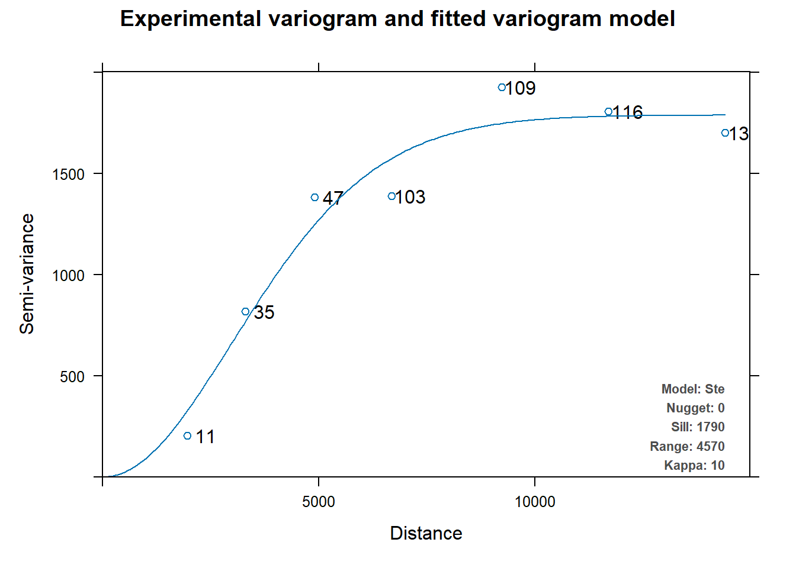
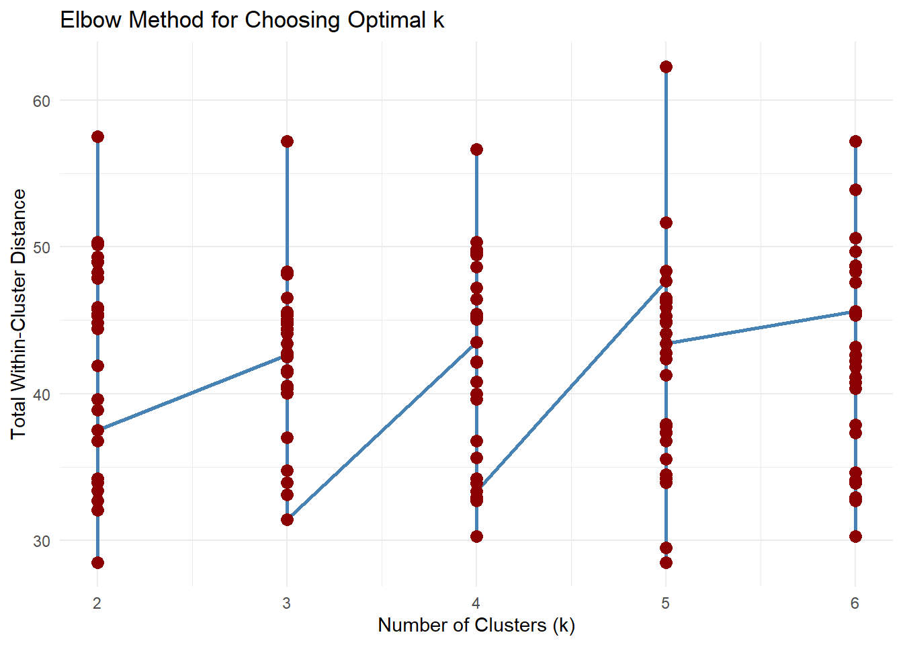
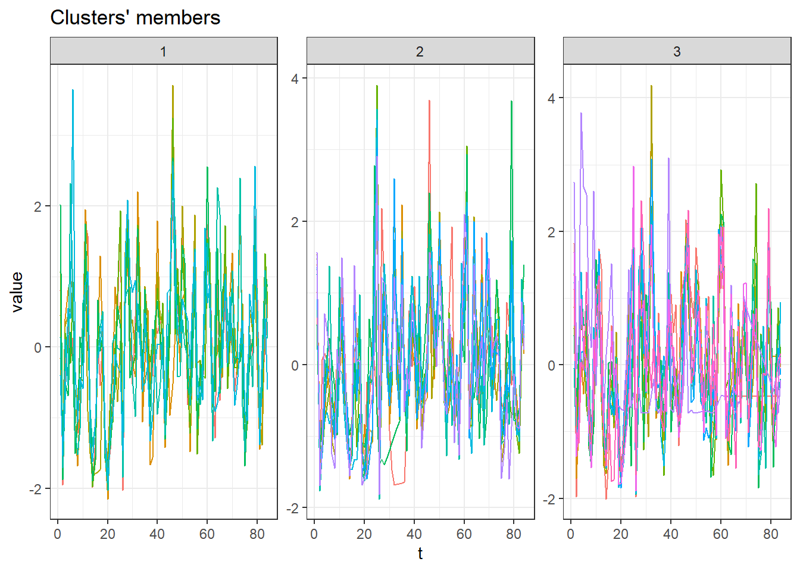
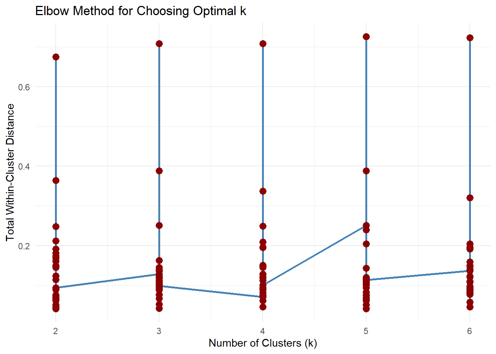
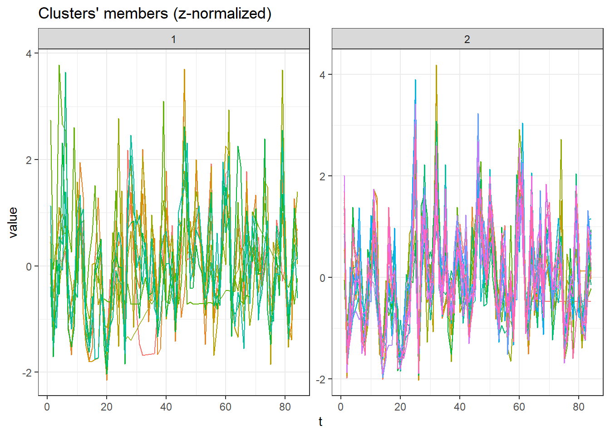

# Load all required packages
pacman::p_load(tidyverse, lubridate, SmartEDA, ggplot2, tsibble, feasts, seasonal, imputeTS, fable, changepoint, viridis, dtwclust)Take-home Exercise 3: Spatiotemporal Rainfall Analysis
Overview
This analysis explores the variability of rainfall in Singapore through both temporal and spatial dimensions to better understand precipitation patterns and improve rainfall prediction. The temporal rainfall analysis involves seasonal decomposition to uncover trends, seasonal effects, and irregularities in rainfall data, as well as change point detection to identify long-term shifts. Complementing this, the spatial rainfall analysis applies interpolation to create choropleth of rainfall intensity across Singapore and time-series clustering techniques to detect regions with similar rainfall behavior, aiding in the identification of rainfall hotspots.
1. Getting Started
1.1 Installing Packages
# Load spatial packages carefully (after ordered install)
library(sf)
library(terra)
library(gstat)
library(automap)
# library(tmap)1.2 Importing Data
A total of three datasets sourced from the Meteorological Service Singapore (MSS) are utilized in this analysis.
Weather Data (2018 - 2024): Covers rainfall records from 63 stations across Singapore over a 7-year period (Jan 2018 - Dec 2024). Data was extracted, merged, and processed using Python to form a complete time-series dataset.
Rainfall Station Coordinates: Contains latitude and longitude information for all 63 rainfall stations.
Active Rainfall Stations: Contains latitude and longitude information for 27 stations that are currently active.
weather <- read.csv("data/weather_data.csv")
active_stations <- read.csv("data/active_rainfall_stations.csv")
stations <- read.csv("data/RainfallStation.csv")For the temporal analysis, only active rainfall stations with relatively complete and consistent time series data are included to ensure data quality and minimize missing values. Closed or intermittent stations are excluded, as they often introduce gaps or inconsistencies in the time series. For spatial analysis, all stations with available data at the specified time interval are utilized, including those no longer operational, provided they contain valid measurements for the selected timeframe. For clustering analysis, the analysis is restricted to active stations to maintain uniformity and reliability in the grouping process.
2. Data Preparation
To facilitate accurate data merging, station names were standardized across all datasets. This involved trimming and harmonizing naming conventions to ensure consistency. For example, variations such as “Pasir Ris (Central)” in one dataset and “Pasir Ris Central” in another were aligned by removing special characters and formatting discrepancies.
# remove () for consistent naming
weather$Station <- gsub("[()]", "", trimws(as.character(weather$Station)))
active_stations$Station.Name <- gsub("[()]", "", trimws(as.character(active_stations$Station.Name)))
stations$Station <- gsub("[()]", "", trimws(as.character(stations$Station)))Active stations are filtered from the weather dataset for use in temporal analysis and clustering.
weather_active <- weather %>%
filter(Station %in% active_stations$Station.Name)The datasets are merged, and only the relevant columns are retained. A new column, Date, is created by combining the separate year, month, and day columns into a proper date format.
weather_active <- weather_active %>%
select(Station, Year, Month, Day, Daily.Rainfall.Total..mm.) %>%
filter(!is.na(Daily.Rainfall.Total..mm.)) %>%
merge(active_stations, by.x = "Station", by.y = "Station.Name") %>%
select(Station, Year, Month, Day, Daily.Rainfall.Total..mm., Latitude, Longitude) %>%
mutate(Date = make_date(Year, Month, Day), Station = as.factor(Station)) %>%
arrange(Station, Date)weather <- weather %>%
select(Station, Year, Month, Day, Daily.Rainfall.Total..mm.) %>%
filter(!is.na(Daily.Rainfall.Total..mm.)) %>%
merge(stations, by.x = "Station", by.y = "Station") %>%
select(Station, Year, Month, Day, Daily.Rainfall.Total..mm., Latitude, Longitude) %>%
mutate(Date = make_date(Year, Month, Day), Station = as.factor(Station)) %>%
arrange(Station, Date)3. EDA
The weather data from active stations is examined to assess variable types and overall data quality. The dataset includes one factor variable representing station identifiers and one date variable, both indicating appropriate data types for the intended analyses.
weather_active %>% ExpData(type = 2) Index Variable_Name Variable_Type Sample_n Missing_Count
1 1 Station factor 64853 0
2 2 Year numeric 64853 0
3 3 Month numeric 64853 0
4 4 Day numeric 64853 0
5 5 Daily.Rainfall.Total..mm. numeric 64853 0
6 6 Latitude numeric 64853 0
7 7 Longitude numeric 64853 0
8 8 Date Date 64853 0
Per_of_Missing No_of_distinct_values
1 0 27
2 0 7
3 0 12
4 0 31
5 0 679
6 0 27
7 0 27
8 0 25574. Temporal Rainfall Analysis
4.1 Data Pre-processing
To facilitate monthly time-series analysis, a new time-series object is created by aggregating daily rainfall data into monthly totals. This process begins by generating a new column, MonthYear, which rounds each Date down to the first day of its respective month using the floor_date() function. The data is then grouped by both Station and MonthYear, and the total monthly rainfall is computed for each station.
# Create monthly time series object
tsibble_data <- weather_active %>%
mutate(MonthYear = floor_date(Date, "month")) %>%
group_by(Station, MonthYear) %>%
summarise(MonthlyRain = sum(Daily.Rainfall.Total..mm.)) %>%
ungroup()The previously aggregated monthly rainfall data is then transformed into a proper tsibble (tidy temporal data frame) structure for time series analysis.
tsibble_data <- tsibble_data %>%
mutate(MonthYear = yearmonth(MonthYear)) %>%
as_tsibble(index = MonthYear, key = Station)The Daily Rainfall Total variable contains a substantial proportion of missing values, emphasizing the need for appropriate imputation or data filtering strategies to ensure a complete and continuous monthly time series for each weather station. To address this, the fill_gaps() function is first applied to the tsibble_data to insert any missing months for each Station, even when no rainfall data was recorded - thereby enforcing a regular and complete time-series structure. The data is then grouped by Station to manage each time series independently. Within each group, na_interpolation() is used to estimate and fill missing values in the MonthlyRain column by interpolating based on adjacent data points.
tsibble_data <- tsibble_data %>%
fill_gaps() %>%
group_by(Station) %>%
mutate(MonthlyRain = na_interpolation(MonthlyRain)) %>%
ungroup()4.2 Time Series Decomposition
The ts_decomposition function is designed to visually analyze the time series pattern of monthly rainfall for a specific weather station. This analysis focuses on the Bukit Panjang station to examine temporal rainfall dynamics over the 2018 - 2024 period.
ts_decomposition <- function(station_name) {
tsibble_data %>%
filter(Station == station_name) %>%
gg_tsdisplay(MonthlyRain) +
labs(title = paste("Monthly Rainfall in", station_name))
}ts_decomposition("Bukit Panjang")
Time Series Plot:
The rainfall pattern exhibits clear monthly fluctuations, with periodic peaks typically occurring around mid-year and year-end - indicative of strong seasonal influences, likely associated with Singapore’s inter-monsoon and monsoon periods. There is no evident long-term upward or downward trend, suggesting stationarity in the overall rainfall levels, although certain years, such as 2021, show unusually high peaks, which may be attributed to extreme weather events or anomalous climatic conditions.
ACF Plot:
The plot reveals significant correlations at lag 1 and lag 6, suggesting that monthly rainfall is influenced by recent months and may exhibit a semi-annual seasonal component. The decreasing autocorrelation beyond a few lags indicates short-term memory in the data, supporting the application of seasonal time series models such as ARIMA.
Seasonal Plot by Month:
Monthly patterns also highlight consistently higher rainfall in November - December, aligning with the Northeast monsoon season. Although seasonal trends are generally consistent, there is noticeable inter-annual variability; for instance, 2021 recorded an exceptionally high rainfall in August, while years like 2019 experienced more moderate and stable patterns.
4.3 STL Decomposition
The stl_decomposition function is developed to perform seasonal-trend decomposition of monthly rainfall data using the STL (Seasonal-Trend decomposition using Loess) method, applied here to the Bukit Panjang weather station.
stl_decomposition <- function(station_name) {
tsibble_data %>%
filter(Station == station_name) %>%
model(stl = STL(MonthlyRain)) %>%
components() %>%
autoplot() +
labs(title = paste("STL Decomposition for", station_name))
}stl_decomposition("Bukit Panjang")
Observed Rainfall:
The decomposition reveals that the original time series (MonthlyRain) exhibits high variability, characterized by multiple spikes and dips, with pronounced peaks in specific months - indicating the presence of both strong seasonal effects and irregular fluctuations.
Trend Component:
It shows a gradual decline from early 2018 to mid-2020, followed by a notable upward movement peaking around early 2022. After this period, the trend stabilizes, suggesting a phase of relatively consistent long-term rainfall levels. These trend shifts may be attributed to broader climatic changes, urbanization impacts, or variations in extreme weather events.
Seasonal Component:
The seasonal pattern remains stable and consistent across the years, with recurring annual patterns - highlighting the influence of Singapore’s biannual monsoon seasons. This consistent seasonality reinforces the presence of regular intra-annual rainfall cycles typical of equatorial climates, making the STL approach well-suited for uncovering both short-term anomalies and long-term rainfall dynamics in the region.
Remainder Component:
The remainder captures short-term, irregular fluctuations not explained by trend or seasonality. Sharp spikes and dips suggest the influence of extreme rainfall events or anomalies, which may correspond to localized storms or data irregularities. The residuals are relatively centered around zero, indicating that the decomposition model fits the data reasonably well.
4.4 Change Point Detection
The detect_changepoints function is designed to identify and visualize change points in the mean of monthly rainfall data for a specific weather station. A change point indicates a significant shift in the average rainfall level, which might reflect climate events, seasonal shifts, or other environmental changes. The PELT method (Pruned Exact Linear Time) from the changepoint package is used. This detects points in the time series where the mean changes significantly, allowing for multiple change points. Here, we focus on analyzing Bukit Panjang station.
detect_changepoints <- function(station_name) {
station_data <- tsibble_data %>%
filter(Station == station_name) %>%
pull(MonthlyRain)
cpt_result <- cpt.mean(station_data, method = "PELT")
plot(
cpt_result,
main = paste("Change Points in Monthly Rainfall (Mean) for", station_name),
xlab = "Month Index",
ylab = "Rainfall (mm)"
)
}changepoint_res <- detect_changepoints("Bukit Panjang")
The plot highlights a piecewise constant approximation (red steps) of the rainfall series, indicating where mean rainfall levels shift. Several distinct change points are observed throughout the series, showing abrupt changes in average monthly rainfall. Notably, a major increase is detected around the 40th month index (mid-2021), which corresponds to the period with the highest rainfall spike - this could reflect an extreme weather event or anomalous monsoon activity.
The plot_changepoints function visualizes change points in the mean rainfall over time for a specific weather station by combining time series plotting with change point detection.
plot_changepoints <- function(station_name) {
station_data <- tsibble_data %>%
filter(Station == station_name)
rain <- station_data$MonthlyRain
dates <- station_data$MonthYear
cpt_result <- cpt.mean(rain, method = "PELT")
change_indices <- cpts(cpt_result)
change_dates <- as.Date(dates[change_indices])
ggplot(station_data, aes(x = as.Date(MonthYear), y = MonthlyRain)) +
geom_line(color = "steelblue") +
geom_vline(xintercept = change_dates, linetype = "dashed", color = "red") +
labs(
title = paste("Monthly Rainfall with Change Points for", station_name),
x = "Year",
y = "Rainfall (mm)"
) +
theme_minimal()
}plot_changepoints("Bukit Panjang")
This plot visualizes frequent change points across the timeline, marked by red dashed vertical lines. The presence of numerous change points suggests high variability in monthly rainfall behavior, with frequent shifts in mean and possibly variance. The high density of change points may imply either genuine high-frequency climatic variability or the need to fine-tune sensitivity parameters in the detection algorithm.
5. Spatial Rainfall Analysis
5.1 Data Pre-processing
The data is first aggregated to represent monthly spatial points, summarizing rainfall measurements by station and month. For spatial referencing, the latitude and longitude values for each station are extracted using the first() function, as these coordinates remain constant within each station. The dataset is then converted into an sf object to enable geospatial analysis.
rf_data <- weather %>%
mutate(MonthYear = floor_date(Date, "month")) %>%
group_by(Station, MonthYear) %>%
mutate(MonthYear = yearmonth(MonthYear)) %>%
summarise(
MonthlyRain = sum(Daily.Rainfall.Total..mm.),
Latitude = first(Latitude),
Longitude = first(Longitude),
.groups = "drop"
)To ensure proper spatial referencing, the Coordinate Reference System (CRS) is initially set to EPSG:4326, which uses the WGS 84 standard - commonly used for global positioning and representing geographic coordinates in degrees. Subsequently, the spatial object is transformed to EPSG:3414, also known as SVY21 / Singapore TM, a projected coordinate system specifically designed for mapping within Singapore. Unlike WGS 84, SVY21 expresses coordinates in meters, making it more suitable for accurate distance measurements, spatial interpolation, and localized mapping within the Singapore context.
rf_data_sf <- st_as_sf(rf_data,
coords = c("Longitude",
"Latitude"),
crs= 4326) %>%
st_transform(crs = 3414)The Singapore boundary shapefile is imported and similarly transformed to the EPSG:3414 coordinate reference system to ensure spatial consistency with the rainfall data.
sg_boundary <- st_read(dsn = "data/geospatial",
layer = "MPSZ-2019") %>%
st_transform(crs = 3414)Reading layer `MPSZ-2019' from data source
`C:\Users\Zi Qi\Documents\SMU\Visual Analytics\zqwxxg\ISSS608-VAA\Take-home_Ex\Take-home_Ex03\data\geospatial'
using driver `ESRI Shapefile'
Simple feature collection with 332 features and 6 fields
Geometry type: MULTIPOLYGON
Dimension: XY
Bounding box: xmin: 103.6057 ymin: 1.158699 xmax: 104.0885 ymax: 1.470775
Geodetic CRS: WGS 84The pre-processed data is visualized using a quantitative dot map, offering a spatial overview of monthly rainfall distribution across Singapore at the station level.
if ("tmap" %in% loadedNamespaces()) {
tm_check_fix()
tmap_mode("view")
tm_shape(sg_boundary) +
tm_borders(lwd = 1, col = "gray50") +
tm_shape(rf_data_sf) +
tm_dots(fill = 'MonthlyRain', size = 0.8) +
tm_title("Monthly Rainfall Distribution by Station")
}if ("tmap" %in% loadedNamespaces()) {
tmap_mode("plot")
}Each blue dot represents a rainfall monitoring station, with the network demonstrating even spatial distribution across the island. This comprehensive coverage spans urban, suburban, central, coastal, and peripheral regions, ensuring that the dataset effectively captures localized variations in precipitation.
5.2 Interpolation Preparation
Spatial interpolation requires the creation of an interpolation grid prior to execution. A regular grid of points is generated within Singapore’s geographical boundaries. Subsequently, two interpolation techniques - Inverse Distance Weighting (IDW) and Ordinary Kriging - are implemented and comparatively evaluated.
Creating Interpolation Grid
First, a raster template is created over the boundary at a specified resolution using terra::rast(), producing a dense grid across the region.
grid <- terra::rast(sg_boundary,
nrows = 690,
ncols = 1075)The centroid coordinates (x, y) of each raster cell are then extracted using terra::xyFromCell().
xy <- terra::xyFromCell(grid,
1:ncell(grid))These coordinates are subsequently converted into an sf object via st_as_sf(), with the coordinate reference system (CRS) aligned to that of sg_boundary. Finally, st_filter(coop, sg_boundary)�is applied to retain only grid points within Singapore’s boundaries, discarding external points. The resulting object comprises uniformly spaced spatial points constrained to Singapore’s exact geographical extent.
coop <- st_as_sf(as.data.frame(xy),
coords = c("x", "y"),
crs = st_crs(sg_boundary))
coop <- st_filter(coop, sg_boundary)
head(coop)Simple feature collection with 6 features and 0 fields
Geometry type: POINT
Dimension: XY
Bounding box: xmin: 25883.42 ymin: 50231.33 xmax: 26133.32 ymax: 50231.33
Projected CRS: SVY21 / Singapore TM
geometry
1 POINT (25883.42 50231.33)
2 POINT (25933.4 50231.33)
3 POINT (25983.38 50231.33)
4 POINT (26033.36 50231.33)
5 POINT (26083.34 50231.33)
6 POINT (26133.32 50231.33)Selecting Month
The select_month_data function extracts data for a specified month. This can be utilized to create animated choropleth visualizations over time, facilitating dynamic representation of rainfall patterns across locations. This analysis specifically examines March 2024.
select_month_data <- function(month_label) {
month_data <- rf_data %>%
filter(format(MonthYear, "%Y %b") == month_label)
month_data_sf <- rf_data_sf %>%
filter(format(MonthYear, "%Y %b") == month_label)
return(list(data = month_data, data_sf = month_data_sf))
}month_label <- "2024 Mar"
result <- select_month_data(month_label)
month_data <- result$data
month_data_sf <- result$data_sf5.3 IDW Interpolation
The interpolation process begins by creating a gstat model object, where MonthlyRain ~ 1 specifies that interpolation is based only on spatial location (no covariates). The model configuration employs the 5 nearest known rainfall stations (nmax = 5) to maintain local relevance while preventing oversmoothing. The inverse distance power parameter (idp) is set to 0, implementing uniform spatial weighting to avoid overemphasis of isolated high/low points. This configuration reflects Singapore’s precipitation characteristics, where rainfall patterns exhibit relatively smooth spatial gradients due to the country’s small size.
res <- gstat(formula = MonthlyRain ~ 1,
locations = month_data_sf,
nmax = 5,
set = list(idp = 0))Then, predict(res, coop) computes rainfall estimates at the regularly spaced points. The x and y coordinates are extracted and stored.
# Predict
resp <- predict(res, coop)[inverse distance weighted interpolation]resp$x <- st_coordinates(resp)[,1]
resp$y <- st_coordinates(resp)[,2]
resp$pred <- resp$var1.predFinally, terra::rasterize() converts the point-based predictions into a raster grid by averaging predictions in each raster cell. This raster can then be visualized as a continuous rainfall surface over Singapore.
# Rasterize
pred <- terra::rasterize(resp, grid, field = "pred", fun = "mean")The interpolated rainfall surface is then visualized through a choropleth map.
if ("tmap" %in% loadedNamespaces()) {
tm_check_fix()
tmap_mode("plot")
tm_shape(pred) +
tm_raster(col.scale = tm_scale(values = "brewer.blues"),
col.legend = tm_legend(title = "Total monthly\n rainfall (mm)")) +
tm_style("white") +
tm_title(paste("Distribution of Monthly Rainfall -", month_label)) +
tm_compass(type = "8star", size = 2) +
tm_scalebar(position = c("left", "bottom")) +
tm_grid(alpha = 0.2)
}The western and southwestern regions (e.g., Jurong, Clementi, Bukit Batok, and Tuas) recorded the highest rainfall levels (200-220 mm), shown in the darkest blue shades. This aligns with typical late Northeast Monsoon influence or possible localized convective rainfall in those areas.
Central zones such as Bukit Timah, Bishan, and Queenstown received 160-200 mm, indicating moderate but widespread rainfall across Singapore’s central catchment area. These areas consistently experience slightly elevated rainfall due to topography and vegetation.
The northeastern and eastern parts of the island (including Changi, Punggol, and Pasir Ris) showed lower rainfall values (100-140 mm). This east-west gradient may reflect weakened monsoon effects or shifts in storm tracks during the transition period between monsoons.
5.4 Ordinary Kringing
Kriging interpolation leverages spatial autocorrelation to generate optimal predictions.�The process begins by using autofitVariogram() to automatically fit a variogram model to the rainfall data. The variogram characterizes how rainfall values are spatially related over distance. The fitted variogram is then plotted to visualize the spatial structure of the data.
v_auto <- autofitVariogram(MonthlyRain ~ 1,
month_data_sf)
plot(v_auto)
The semi-variance increases smoothly with distance and levels off near the sill, forming a classic variogram curve. The smooth and gradual rise toward the sill suggests a well-structured spatial process with strong short-range autocorrelation. The absence of a nugget effect and tight clustering of points around the curve indicate high spatial predictability and data quality.
Next, a kriging model is created using the gstat function, incorporating the fitted variogram model and the rainfall data.
k <- gstat(formula = MonthlyRain ~ 1,
model = v_auto$var_model,
data = month_data_sf)The predict() applies the kriging model to the grid points, generating spatial predictions of monthly rainfall. The predicted values are extracted along with their x and y coordinates. Finally, terra::rasterize() converts these point predictions into a raster object, creating a continuous surface that represents interpolated rainfall estimates across the entire study area.
resp <- predict(k, coop)[using ordinary kriging]resp$x <- st_coordinates(resp)[,1]
resp$y <- st_coordinates(resp)[,2]
resp$pred <- resp$var1.pred
resp$pred <- resp$pred
kpred <- terra::rasterize(resp, grid,
field = "pred")The interpolated rainfall surface is then visualized through a choropleth map.
if ("tmap" %in% loadedNamespaces()) {
tm_check_fix()
tmap_mode("plot")
tm_shape(kpred) +
tm_raster(
col.scale = tm_scale_continuous(values = "brewer.blues"),
col.legend = tm_legend(title = "Total monthly\nrainfall (mm)")) +
tm_title(
text = paste("Distribution of Monthly Rainfall -", month_label),
) +
tm_layout(frame = TRUE) +
tm_compass(type = "8star", size = 2) +
tm_scalebar(position = c("left", "bottom")) +
tm_grid(alpha = 0.2) +
tm_style("white")
}Higher rainfall concentrations (above 250 mm) are observed in south-central and southwestern regions, likely around areas such as Queenstown, Bukit Merah, and Clementi. These zones appear in the darkest blue tones. Other localized high-rainfall zones include parts of the northern and western regions, suggesting patchy rainfall accumulation influenced by local convection or microclimates. Lower rainfall levels (below 150 mm) are observed in the eastern and northeastern zones, such as Tampines, Changi, and Pulau Ubin, which appear in lighter shades of blue.
5.5 Visual Differences
Appearance:
The IDW interpolation map exhibits a more segmented appearance, characterized by sharper transitions between rainfall zones. In contrast, the Ordinary Kriging map displays smoother gradients, offering continuous transitions in rainfall estimates that reflect a more natural spatial variation.
Hotspot areas:
Both methods identify rainfall hotspots in the western and central regions of Singapore. However, while the IDW map presents these areas with clearly defined boundaries, the Kriging map portrays similar hotspots with a more diffused and realistic spatial spread, aligning with expected spatial autocorrelation patterns.
Low-rainfall zones:
In the eastern and northeastern zones, the IDW map shows distinctly delineated low-rainfall areas, whereas the Kriging map reflects a similar trend but with more gradual transitions, resulting in a smoother interpretation of rainfall decline across space.
Interpolation quality:
Overall, IDW performs well in areas with dense station coverage, but it may oversimplify spatial variability, especially where rainfall patterns are complex. Ordinary Kriging, on the other hand, provides statistically optimal estimates, particularly effective when spatial dependence is strong.
6. Time-Series Clustering
Two clustering configurations are explored: one using Dynamic Time Warping (DTW), which captures temporal distortions by aligning sequences non-linearly, and another using Shape-Based Distance (SBD), which measures similarity based on the shape of time series patterns.
6.1 Data Pre-processing
The analysis begins by aggregating the data to compute monthly rainfall totals, using only active stations.
clust_data <- weather_active %>%
mutate(MonthYear = floor_date(Date, "month")) %>%
group_by(Station, MonthYear) %>%
mutate(MonthYear = yearmonth(MonthYear)) %>%
summarise(MonthlyRain = sum(Daily.Rainfall.Total..mm.))Since the subsequent time series clustering requires a list of numeric vectors, with each element representing a time series (e.g., monthly rainfall for a specific station), the data is first reshaped into wide format, where each station forms a separate column.
clust_data <- clust_data %>%
pivot_wider(
names_from = Station,
values_from = MonthlyRain
)To address missing values and maintain continuity in the time series, na_interpolation() is applied to estimate and fill gaps based on adjacent data points, ensuring a smooth and complete dataset for each station.
clust_data <- clust_data %>%
mutate(across(
-MonthYear,
~ na_interpolation(.x)
))Once interpolation is complete, the data is then converted into list format, preparing it for input into time series clustering algorithms.
rain_list <- clust_data %>%
select(-MonthYear) %>%
as.list() %>%
lapply(as.numeric)The data is then standardized. The reinterpolate() function is used to resample all series to a common length, matching the longest series in the dataset. This step ensures structural alignment across time series for meaningful comparison. Subsequently, the zscore() function is applied to normalize each series, transforming them to have a zero mean and unit variance. This normalization removes differences in scale and focuses the analysis on the underlying patterns rather than magnitude.
rain_list <- reinterpolate(rain_list, new.length = max(lengths(rain_list)))
rain_list <- zscore(rain_list)6.2 Dynamic Time Warping (DTW)
The clustering performance for values of k ranging from 2 to 6 is evaluated using the tsclust() function, which applies partitional clustering with standard DTW implementation (dtw) and Dynamic Time Warping Barycenter Averaging centroids (dba). For each value of k, it extracts the total within-cluster distances - how well each time series fits its assigned cluster - using clust@cldist and sums them to get an overall clustering error.
evaluate <- sapply(2:6, function(k) {
clust <- tsclust(rain_list, type = "partitional", k = k, distance = "dtw_basic",
centroid = "dba", seed = 123)
clust@cldist
})evaluate_total <- sapply(evaluate, sum)
df_elbow <- data.frame(
k = 2:6,
total_distance = evaluate_total
)An elbow curve is plotted to identify the point at which increasing the number of clusters yields diminishing returns.
ggplot(df_elbow, aes(x = k, y = total_distance)) +
geom_line(color = "steelblue", size = 1) +
geom_point(color = "darkred", size = 3) +
labs(
title = "Elbow Method for Choosing Optimal k",
x = "Number of Clusters (k)",
y = "Total Within-Cluster Distance"
) +
theme_minimal()
There is a notable drop in total within-cluster distance from k = 2 to k = 4, suggesting that the model is improving significantly by adding more clusters. However, after k = 4, the decrease in total distance becomes much more gradual or even inconsistent, indicating that additional clusters do not meaningfully improve the clustering. So, the optimal cluster number is likely to be 3 or 4.
The clustering model is then fitted, and its performance is assessed using the silhouette score.
model1 <- tsclust(rain_list, type = "partitional", k = 3,
distance = "dtw_basic",
centroid = "dba",
seed = 123)cvi(model1, type = "internal") Sil SF CH DB DBstar D COP
0.05852694 0.00000000 9.75637874 1.99474596 1.99474596 0.51550153 0.64998848 plot(model1, type = "series")
Among the number of clusters tested, the model with 3 clusters yielded the highest silhouette score; however, the value of 0.0536 is very close to zero, indicating a very weak clustering structure. This suggests that the time series within each cluster are not substantially more similar to one another than to those in other clusters. As visualized in the series plot, the clusters likely exhibit considerable overlap, and there may be an absence of distinct natural groupings in the data when using DTW distance as the similarity measure. This outcome points to either high variability across stations or low temporal differentiation in rainfall patterns that cannot be effectively captured by DTW-based clustering.
6.3 Shape-based Distance (SBD)
The clustering performance is evaluated, which applies partitional clustering with shape-based distance (sbd) and shape-based centroids (k-Shape).
evaluate <- sapply(2:6, function(k) {
clust <- tsclust(rain_list, type = "partitional", k = k, distance = "sbd",
centroid = "shape", seed = 123)
clust@cldist
})evaluate_total <- sapply(evaluate, sum)
df_elbow <- data.frame(
k = 2:6,
total_distance = evaluate_total
)An elbow curve is plotted to identify the point at which increasing the number of clusters yields diminishing returns.
ggplot(df_elbow, aes(x = k, y = total_distance)) +
geom_line(color = "steelblue", size = 1) +
geom_point(color = "darkred", size = 3) +
labs(
title = "Elbow Method for Choosing Optimal k",
x = "Number of Clusters (k)",
y = "Total Within-Cluster Distance"
) +
theme_minimal()
From k = 2 to k = 4, the total within-cluster distance gradually decreases, suggesting improved cohesion of clusters. Thus, the optimal number of clusters is likely to fall within the this range.
The clustering model is then fitted, and its performance is assessed using the silhouette score.
model2 <- tsclust(rain_list, type = "partitional", k = 2,
distance = "sbd",
centroid = "shape",
seed = 123)cvi(model2, type = "internal") Sil SF CH DB DBstar D COP
0.2639895 0.4932070 5.4103980 2.6034182 2.6034182 0.1583115 0.3183351 plot(model2, type = "series")
The series plot for shape-based clustering with two clusters visually supports the moderate silhouette score of 0.264, indicating that while the clusters are somewhat distinct, there is still some overlap. In the plot, Cluster 1 displays greater variation in both shape and amplitude, with more scattered and less synchronized series, reflecting lower cohesion. In contrast, Cluster 2 contains time series that appear more consistent and closely aligned in their temporal patterns, suggesting strong cohesion within the cluster. Despite the differences in internal consistency between the two clusters, the overall similarity in their temporal dynamics likely reduces the separation between them. This explains the moderate silhouette score: the algorithm successfully groups series with broadly similar shapes, but the boundaries between clusters are not sharply defined, leading to only partially distinct cluster structures.
6.4 Mapping Cluster Results
Since the SBD-based clustering model yielded a higher silhouette score, it is selected for mapping the clustering results onto the Singapore spatial context. The process begins by associating each station in the time series list with its corresponding cluster label derived from the fitted model.
station_clusters <- data.frame(
Station = names(rain_list),
Cluster = as.factor(model2@cluster)
)Next, the monthly rainfall totals for active stations are computed while preserving the geographic coordinates. The resulting data is converted into sf object, assigning longitude and latitude as spatial coordinates and transforming the coordinate reference system to Singapore’s SVY21 projection (EPSG:3414).
c_rf_data <- weather_active %>%
mutate(MonthYear = floor_date(Date, "month")) %>%
group_by(Station, MonthYear) %>%
mutate(MonthYear = yearmonth(MonthYear)) %>%
summarise(
MonthlyRain = sum(Daily.Rainfall.Total..mm.),
Latitude = first(Latitude),
Longitude = first(Longitude),
.groups = "drop"
)c_rf_data_sf <- st_as_sf(c_rf_data,
coords = c("Longitude",
"Latitude"),
crs= 4326) %>%
st_transform(crs = 3414)The cluster assignments are merged with the spatial rainfall data using left_join(), producing a geospatial dataset that contains rainfall summaries, coordinates, and time series cluster memberships for each station.
stations_with_cluster <- c_rf_data_sf %>%
left_join(station_clusters, by = "Station")Finally, the clustered rainfall data is visualized as a spatial map.
if ("tmap" %in% loadedNamespaces()) {
tm_check_fix()
tmap_mode("view")
tm_shape(sg_boundary) +
tm_polygons(col = "grey90", border.col = "white") +
tm_shape(stations_with_cluster) +
tm_symbols(
col = "Cluster",
palette = "Set2",
size = 0.4,
title.col = "Cluster"
) +
tm_layout(
title = "Time Series Clusters of Monthly Rainfall (by Station)",
legend.outside = TRUE,
frame = FALSE
)
}if ("tmap" %in% loadedNamespaces()) {
tmap_mode("plot")
}From the spatial distribution, we can interpret that:
- Cluster 1 (green) stations are more common in the western and northwestern regions, including some in the southwest. These stations likely exhibit more variable or intense rainfall patterns, as inferred from earlier cluster analysis.
- Cluster 2 (orange) stations are widely distributed across central, eastern, and northeastern Singapore, particularly concentrated in more urban or coastal regions. This suggests these stations experience more consistent or stable rainfall behavior over time.